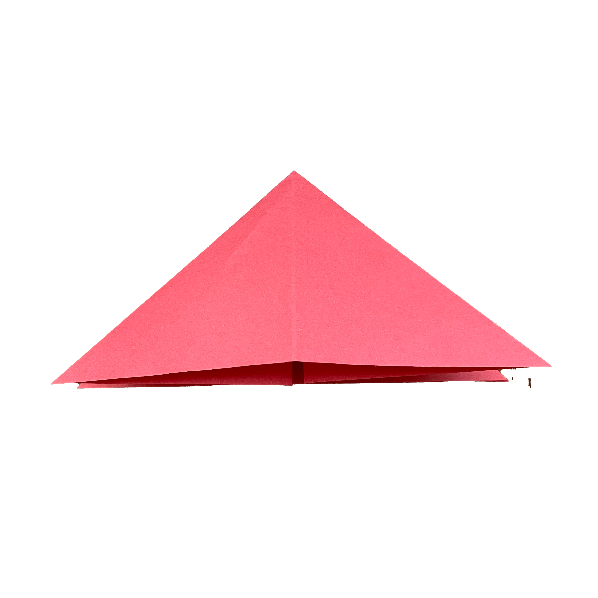
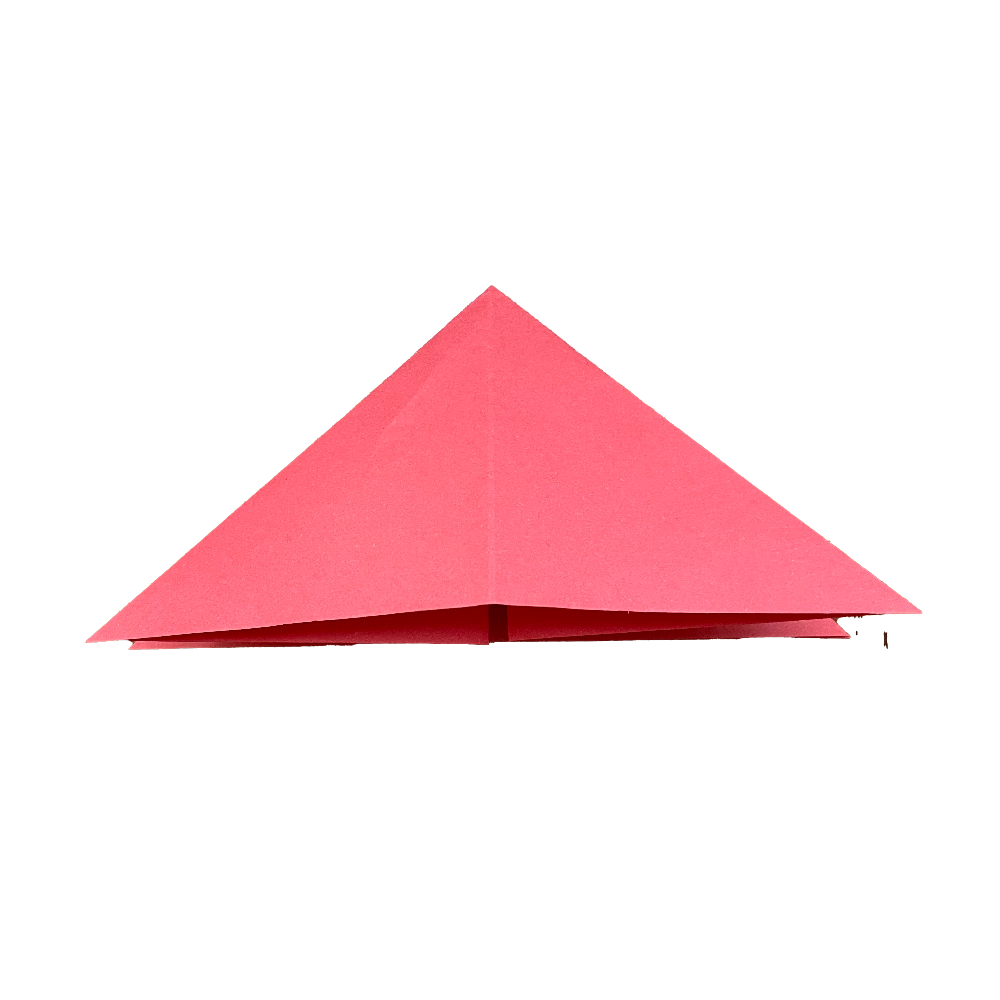
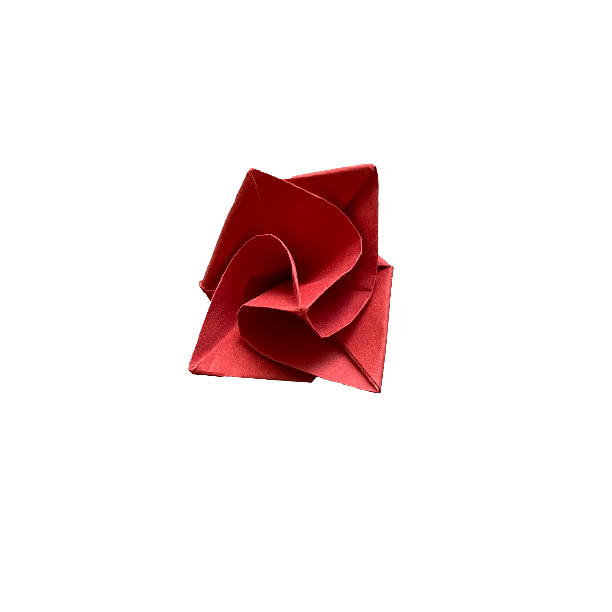
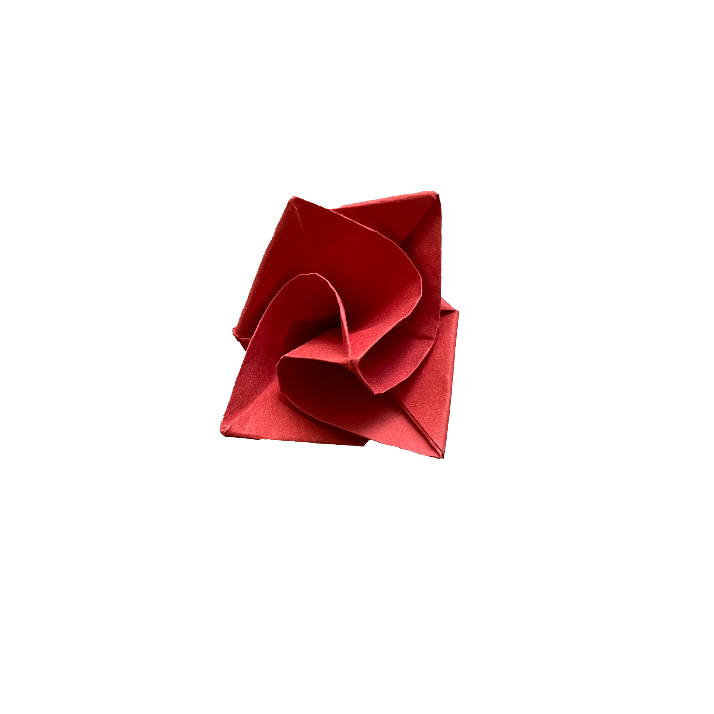

How To Fold A Rose
Here are the instructions for crafting an origami 3D rose. This captivating form of paper art is often seen as a symbol of affection, grace, and admiration. Creating these intricate folded blossoms is not only a delightful pastime but also a truly meaningful expression.
This model is simple and fun to fold, making it perfect for beginners. All you need is a strip of paper and a bit of patience.
Rose Step-by-Step Instructions
·Difficulty: Easy
·Folding time: 10-15 minutes
·Paper: 15*15 cm
·Total steps: 13 steps
Step 1


Take out a square piece of paper, fold it in half vertically and horizontally.
Step 2
 

Fold the corners to the center point.
Step 3
Turn the paper over and repeat the same folds to the center.
Step 4
Open the flaps to create a layered effect.
Step 5
Fold the edges inward to refine the base shape.
Step 6
Start twisting the center to form the rose swirl.
Step 7
Press the center gently to hold the shape.
Step 8
Continue adjusting the petals by curling them outward.
Step 9
Pinch the edges to give a more natural petal look.
Step 10
Slightly rotate the base to enhance the spiral effect.
Step 11
Make final adjustments to ensure symmetry and fullness.
Step 12
 

Shape the inner petals for a more detailed center.
Step 13
Congratulations! Your origami rose is complete!